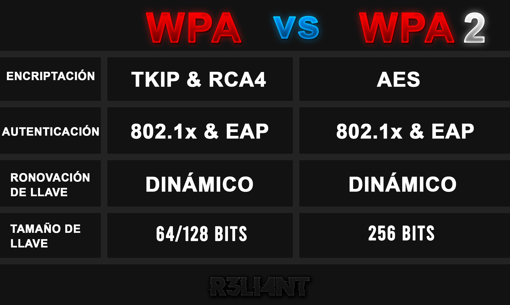
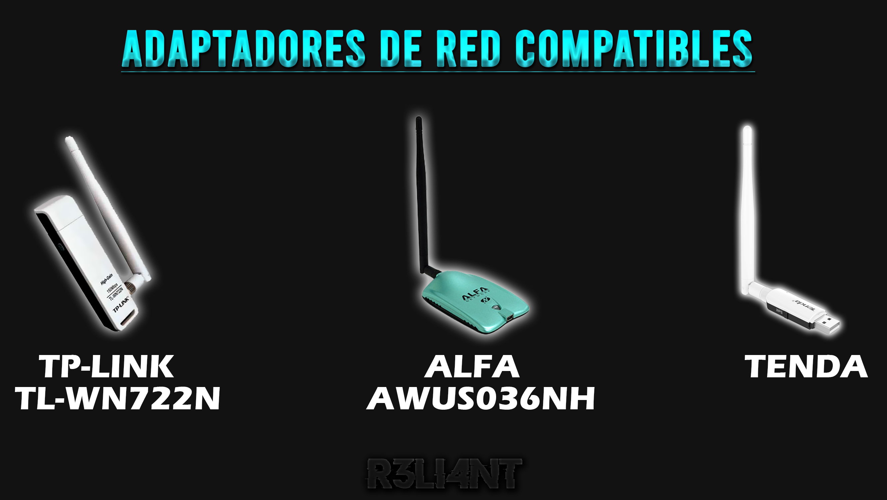

# CIFRADO WPA/WPA2
Actualmente, la mayor parte de los usuarios tiene un router / módem Wi-Fi para conectarse a Internet de forma inalámbrica desde varios dispositivos. Éstos están diseñados con algoritmos de cifrados para evitar que usuarios no autorizados puedan conectarse de forma inalámbrica a nuestro router, robar conexión e incluso sniffear todo el tráfico de nuestros dispositivos en la red local. Los routers ofrecen varios tipos de cifrados y contraseñas de datos diferentes, sin embargo, no todos son iguales.
El cifrado WPA fue diseñado en el año 2003, cuyo propósito es autenticar al usuario a través del protocolo 802.1x con claves precompartida. Utiliza el algoritmo RC4 para fortalecer el cifrado WEP con una clave de 128 bits y un vector de inicialización de 48 bits para cada vector transmitido, lo que le permite ser menos vulnerable que WEP. Este sistema ofrece una serie de variantes:
-
WPA-Personal: Utiliza un sistema de claves PSK donde el administrador debe especificar su propia contraseña para que los usuarios puedan conectarse a la red, simplificando el acceso.
-
RADIUS: Utiliza un sistema de seguridad basado en un servidor en el que los usuarios deben autenticarse con un usuario y una contraseña diferente. Esta enfocado para empresas.
WPA tiene un método de encriptación menos seguro y requiere de una contraseña más corta, al igual que WPA2, puede ser violentado al realizar un ataque de fuerza bruta para penetrar la red.
El cifrado WPA2 fue diseñado en el año 2004 y es la versión certificada del 802.11i. Tiene mayor seguridad y es más simple de configurar, utiliza el estándar de cifrado avanzado (AES) en lugar de TKIP. AES es utilizado por la NSA para proteger información gubernamental de alto secreto, lo que fue útil para proteger dispositivos que estén conectados al Wi-Fi. Este sistema ofrece una serie de variantes:
-
WPA2-Personal: Otorga seguridad a través de contraseña compleja, ideal para uso doméstico o pequeñas empresas.
-
WPA2-Enterprise: Utiliza un servidor para autenticar a los usuarios, ideal para grandes empresas.

# Ataque de Fuerza Bruta
En el campo de la criptografía, la fuerza bruta es descrita como un método para recuperar claves, nombres de usuarios o directorios de un servidor web probando todas las combinaciones posibles. Para llevar a cabo el ataque, el atacante hace uso de un diccionario (documento de texto con salto de línea) en donde registra las posibles contraseñas débiles para descifrarla y ganar acceso. Dependiendo la herramienta, el procesador del equipo y el diccionario a utilizar, adivinar la contraseña requiere de mucho tiempo si no se cuenta con una enumeración detallada (palabras claves, caracteres especiales, números, símbolos, etc) que pueda dar con la misma. La fuerza bruta no es solo empleada para adivinar claves Wi-Fi, sino también para acceder a cuentas personales en redes sociales o bancos. En el caso de las redes sociales no es muy eficaz, pues, la mayoría de ellas cuentan con un sistema de protección y/o autenticación que límita el acceso a usuarios malintencionados (sobre todo para evitar que entren bots), dejando el ataque inutilizable; muchas veces se utilizan user-agents para simular las peticiones HTTP desde dispositivos diferentes.
Tipos de ataques de fuerza bruta:
-
Ataque por Diccionario: Su lógica es muy sencilla, consiste en probar todas las palabras del diccionario hasta averiguar con la contraseña. Este método de cracking es poco eficaz si la contraseña es muy fuerte (combinaciones de caracteres especiales y/o muy larga). En Internet hay diccionarios públicos para utilizar, la mayoría de ellos traen contraseñas débiles y más utilizadas que han sido recolectadas por usuarios (Ej: rockyou). Lo recomedable para llevar este ataque y tener éxito es crear un diccionario propio donde combinemos datos personales del objetivo (edad, nombres, direcciones, números teléfonicos, fechas, pasatiempos, gustos, etc). Si la víctima habla español, es una perdida de tiempo utilizar diccionarios con palabras en inglés (Ej: hello, john, iloveyou, etc) y tampoco utilizarían contraseñas fáciles de descifrar (Ej: nombre1234, fecha-de-cumpleaños, nombre-de-su-mascota123, etc). Un ataque de diccionario difícilmente tiene éxito si la contraseña es una frase larga.
-
Ataque de Tabla Arcoíris: Las rainbow tables (tablas arcoíris) son las más potentes para cracking de hash. Suele utilizarse para romper contraseñas que han sido cifradas en un hash, parten desde un conjunto enorme de hashes precalculados que se combinan entre sí en todos los caracteres especiales, letras y símbolos. En una tabla arcoíris puede caber más de 100.000 palabras en una sola fila, el valor del hash de un servidor web se compara con la lista de valores hash de la tabla Rainbow, el texto se compara con la contraseña a descifrar. El hash se reduce para obtener el siguiente texto original en la cadena, se recorre toda la cadena hasta llegar a un valor hash que coincida con la contraseña. Las Rainbow Tables son específicas con los caracteres empleados en la contraseña, es decir, si una contraseña es demasiada larga o utiliza caracteres que no están en la tabla, entonces no puede ser descifrada; normalmente pueden contener miles de millones de hashes.
-
Ataque Inverso (password spraying): En este caso se empieza por el final. El atacante empieza con una contraseña conocida e irá probando con una lista de miles de usuarios hasta encontrar una coincidencia. Para ello, necesitará recolectar en Internet una base de datos pública que contenga nombre de usuarios filtrados.
# Handshake
Cuando nos conectamos a una red inalámbrica ya sea pública o privada, en el aire están viajando miles de datos que se transmiten desde el punto de acceso (AP) hacia los dispositivos, uno de esos datos es la contraseña cifrada; que obviamente solo es posible capturarla con una herramienta específica. El protocolo de enlace de autenticación de WPA/WPA2 entre el punto de acceso (AP) y el cliente se utiliza para generar claves de cifrado, mismas que luego son utilizadas para cifrar los datos que son envíados a través de un medio inalámbrico. El handshake es capturado cuando el usuario es autenticado de forma automática a la red, por ejemplo, cuando salimos de casa el Wi-Fi del router es desconectado ya que su alcance es de algunos metros, pero al volver nuestro celular reconoce el AP y se conecta solo. Para entenderlo mejor, para capturar el handhsake (contraseña cirada) es preciso desconectar al cliente de la red y que se vuelva a conectar, para ello se realiza un ataque de desautenticación o en el caso de no haber clientes conectados, un ataque de autenticación.
-
Activa: Se acelera el proceso al desautenticar un cliente de la red inalámbrica.
-
Pasiva: Se espera que un cliente se autentifique a la red inalámbrica.
Es necesario contar con un adaptador de red externo para capturar los paquetes que viajan en el aire, los más vendidos son los que se observa en la imagen. También es posible llevar el ataque a través de un USB booteable pero el alcance es limitado.

# AIRCRACK-NG | Cracking WPA/WPA2
La suite de Aircrack-ng es una de las más destacada para realizar auditorías de redes inalámbricas Wi-Fi a routers y puntos de acceso. Soporta cracking de cifrado WEP, WPA y WPA2. Esta suite se divide en diferentes herramientas para una tarea en concreto:
-
Airmon-ng: Coloca la tarjeta en modo monitor para capturar e inyectar paquetes de nuestro alrededor.
-
Airodump-ng: Escanea puntos de acceso y captura vectores de inicio.
-
Airplay-ng: Inyecta paquetes, genera tráfico no autorizado para utilizarlo luego (Ataque de autenticación/desautenticación).
-
Aircrack-ng: Descifra la clave de los vectores de inicio.
La suite de seguridad se divide en cuatro áreas de la ciberseguridad en redes inalámbricas:
-
Monitoreo: Permite capturar todos los paquetes de una red inalámbrica, exportar los datos a archivos de texto y posteriormente analizarlos con otros programas (Ej: Wireshark).
-
Vectores de ataques: Es útil para realizar ataques de desautenticación, autenticación, crear puntos de acceso falsos, inyectar paquetes en la red inalámbrica, hacer ataques replay.
-
Testing: Comprueba si nuestra tarjeta de red Wi-Fi es compatible con el modo monitor y con los ataques anteriormente mencionados.
-
Cracking: Permite crackear el cifrado WEP, WPA y WPA2 basado en diccionario por fuerza bruta.
Instalar en Debian:
$ sudo apt-get install aircrack-ng# Detalles
En primer lugar, hay identificar nuestra interfaz de red con ifconfig:

Con el parámetro airmon-ng + nombre-interfaz establecemos nuestro adaptador en modo monitor:
$ airmon-ng start wlan0
Lo siguiente será matar los procesos PID para no presentar ningún error al momento de auditar la red. Cada PID es único y se puede matar de forma manual o automática según su ID. Pero si lo preferimos, airmon lo hace automatizado por nosotros:
$ airmon-ng check kill
Lo más probable es que seamos desconectados del Wi-Fi. Con el parámetro airodump-ng + nombre-interfaz capturamos los paquetes de las redes de nuestro alrededor:
$ airodump-ng wlan0
BSSID: Dirección MAC del punto de acceso.
PWR: Rango en el que se encuentra el AP.
Beacons: Número de paquetes enviados por el AP.
#Data: Número de paquetes capturados.
CH: Número de canal donde opera el AP.
MB: Velocidad máxima soportada por el AP. MB = 11 es 802.11b, si MB = 22 es 802.11b+ y hasta 54 son 802.11g.
ENC: Tipo de algoritmo de cifrado, generalmente las redes privadas utilizan WPA/WPA2 y WEP. En caso de ser una red pública, el algoritmo que utilizará es OPN = sin encriptación.
AUTH: Protocolo de autenticación utilizado.
ESSID: Nombre de la red inalámbrica.
Luego de haber reconocido el BSSID y el canal, quedaría capturar los paquetes del AP objetivo:
$ airodump-ng -c <N-CHANNEL> --bssid <MAC-AP> -w <ARCHIVO-CAPTURA> <INTERFAZ>
Ej: airodump-ng -c 7 --bssid XX:XX:XX:XX:XX:XX -w Reliant wlan0IMPORTANTE no cerrar esta terminal

A modo de ejemplo, atacaré mi propia red (Unknown). La STATION son los clientes que están conectados la red (BSSID), en otra terminal proseguiremos a lanzar el ataque de desautenticación para desconectarlos con el parámetro aireplay-ng. Algo que hay que tener en cuenta es que el ataque de desautenticación puede ser llevado contra todos los clientes que estén conectados al punto de acceso o a uno en específico, personalmente recomiendo desconectar a un solo cliente para no generar sospechas:
$ aireplay-ng --deauth <SEGUNDOS> -a <MAC-AP> -c <MAC> <INTERFAZ>
Ej: aireplay-ng --deauth 10 -a XX:XX:XX:XX:XX:XX -c XX:XX:XX:XX:XX:XX wlan0--deauth: Modo desautenticación. Al agregar el valor 0, el ataque es ílimitado provocando un DoS (Denegación de Servicio) a nivel red.
-a: Dirección MAC del punto de acceso (AP).
-c: Dirección MAC del cliente (STATION) conectado.
En la esquina superior del lado derecho indica que el handshake fue capturado exitosamente, dependerá que tan lejos este el AP, esto quiere decir que se debe reintentar cuantas veces sea necesario para ser capturado.

Por último, utilizamos el parámetro aircrack-ng para crackear la clave PSK por medio de fuerza bruta (ataque de diccionario), la longitud puede variar entre 6 y 63 caracteres. El archivo con extensión .cap es donde se encuentra la contraseña cifrada.

$ aircrack-ng -w <DICCIONARIO> <ARCHIVO.cap> 
La herramienta probo 712 contraseñas en menos de 10 segundos, obviamente metí la contraseña real en el diccionario para acelerar el proceso. Reiternando lo que se ha dicho más arriba, este ataque requiere de mucho tiempo si el diccionario es extenso y la longitud de la contraseña también, por eso mismo se recomienda recabar información sensible del objetivo y a partir de ahí crear un diccionario con palabras claves.
# TIPS DE SEGURIDAD FRENTE A ESTE ATAQUE
No existe una medida que garantice una protección estable contra los ataques de desautenticación, el mecanismo de protección se basa en engañar al atacante desde un segundo router con salida a internet, el cual se configura con el mismo nombre (SSID) y cifrado para que cuando el ataque sea ejecutado, los clientes automáticamente se conectarán al segundo punto de acceso y sigan navegando sin problemas (se le conoce como Roaming AP). Ahora bien, si el atacante tiene dos antenas, entonces puede ejecutar doble ataque de desautenticación contra el segundo router y de nada serviría lo anterior. Algunos provedores de servicio (ISP) establecen la contraseña del router por defecto, misma que esta al alcance de todos, es por ello que se recomienda no solo cambiarla, sino también utilizar combinaciones de números y símbolos para que sea más difícil de descifrar, tal como una frase. Los filtrados de MAC puede ser una opción para expulsar clientes no autorizados del Wi-Fi, pero también es fácil de burlar la seguridad con un reconocimiento de paquetes (STATION) que permitan suplantar la dirección MAC de un usuario autorizado dentro de la lista.